- Pedestrians
- Bicyclists
| Last Modified: 10-07-2025 | 6.11:8.1.0 | Doc ID: NM100000002GLTE |
| Model Year Start: 2024 | Model: Tacoma | Prod Date Range: [12/2023 - ] |
| Title: ADVANCED DRIVER ASSISTANCE SYSTEM: PROACTIVE DRIVING ASSIST: PROACTIVE DRIVING ASSIST(PDA); 2024 - 2026 MY Tacoma Tacoma HV [12/2023 - ] | ||
PROACTIVE DRIVING ASSIST(PDA)
OPERATING CONDITION
(a) Operating Condition
(1) Set the proactive driving assist function to ON using customize settings.
HINT:
- The factory default setting of proactive driving assist is OFF.
- The changed setting will persist even after the ignition switch is turned off.
(2) According to the driving conditions, the operation and detectable objects of the proactive driving assist will change as follows.
|
Function |
Conditions |
Operation |
Detectable Objects |
|---|---|---|---|
|
Obstruction Avoidance Assist (OAA) |
A detectable object is detected crossing the road. |
Assistance with some brake operations is provided in order to reduce the possibility of a collision. |
|
|
A detectable object is detected on the side of the road. |
|
|
|
|
Driver Assist (DA) |
A preceding vehicle or an adjacent vehicle cutting in front of the vehicle is detected. |
The vehicle is gently decelerated so that the vehicle-to-vehicle distance will not be excessively short. |
|
|
A curve is detected ahead of the vehicle |
When it is judged that the vehicle speed is excessive for the approaching curve, assistance with some brake operations are provided. |
- |
|
|
Steering Assist (SA) |
Course is detected |
The vehicle is gently decelerated if the vehicle speed is determined to be too high for the curve ahead. |
- |
(b) Vehicle speeds at which the system can operate
(1) Assist is performed within the following vehicle speed ranges.
|
Operation |
Operation Speeds |
|---|---|
|
Detectable Object Crossing the Road Assistance |
Approximately 20 to 35 mph (30 to 60 km/h) |
|
Detectable Object on the Side of the Road Assistance |
Approximately 20 to 35 mph (30 to 60 km/h) |
|
Preceding Vehicle Deceleration Assistance |
Approximately 15 mph (20 km/h) or more |
|
Curve Deceleration Assistance |
Approximately 15 mph (20 km/h) or more |
|
Vehicles with a Steering Assist: Steering assistwithin a lane |
Approximately 30 to 80 km/h (20 to 50 mph) |
(c) When the system operation will be canceled
(1) In the following situations, system operation will be canceled:
- When the dynamic radar cruise control or cruise control is operating.
- When the PCS is off.
- When the P, R or N shift position is selected.
- When the vehicle speed falls below approximately 9.3 mph (15 km/h), or when a certain vehicle speed has been reached, as judged by the system, according to the surrounding conditions.
(2) In the following situations, system operation may be canceled:
- When the brake control or output restriction control of a driving support system operates (For example: Pre-collision, drive-start control).
- When the system determines that a detected object has moved away from the vehicle.
(3) In the following situations, system assistance may be canceled:
- When the brake control or output restriction control of a driving support system operates (For example: Pre-collision, drive-start control).
- When lane lines can no longer be detected.
- When the brake pedal has been depressed.
- When the accelerator pedal has been depressed.
- When the steering wheel has been operated with more than a certain amount of force.
- When the turn signal lever is operated to the left/right turn position.
(d) Hands off steering wheel warning operation
(1) In the following situations, a message urging the driver to grip the steering wheel and the icon shown in the illustration will be displayed on the multi-information display to warn the driver. If the system detects that the steering wheel is held, the warning will be canceled. When using the system, make sure to grip the steering wheel firmly, regardless of whether the warning is operating or not.
- When the system determines the driver is not holding the steering wheel while assistance to a detectable object on the side of the road is performed
(2) If no operations are detected for a certain amount of time, a buzzer will sound, the warning will operate. This warning may also operate if the driver only operates steering wheel a small amount continuously.
(e) Warning operation after preceding vehicle deceleration assistance has ended
(1) After preceding vehicle deceleration assistance has ended, if the driver does not operate the brake pedal or accelerator pedal and the vehicle approaches the preceding vehicle, this warning will operate to urge the driver to decelerate. If the system determines that the driver is operating the brake pedal or accelerator pedal, the warning will be canceled.
SYSTEM CONTROL
(a) System operation display
(1) Depending on the situation, the following indicators or icons will be displayed.
|
Icon/Display |
Explanation |
|---|---|
HINT: Check that the proactive driving assist function is set to ON in the customize settings for standby (white icon). |
|
| 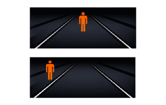 |
A pedestrian has been detected as crossing the road or on the side of the road and brake or steering assistance is operating. HINT: This system is not designed to always display detected pedestrians/bicycles. |
| 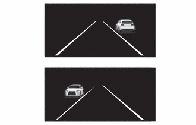 |
A vehicle has been detected on the side of the road and brake or steering operation assistance is being performed. HINT: This system is not designed to always display detected situations. |
|
Steering operation assistance is being performed to prevent the vehicle from approaching too close to a detectable object on the side of the road. |
|
| 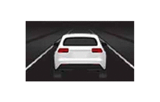 |
Preceding vehicle deceleration assistance is being performed. HINT: This system is not designed to always display detected preceding vehicles. |
| 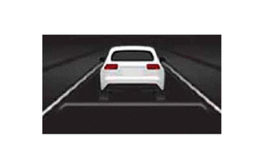 |
Warning to maintain appropriate vehicle-to-vehicle distance. |
| 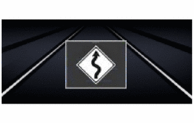 |
Curve deceleration assistance is being performed. HINT: This system is not designed to always display detected curves. |
| 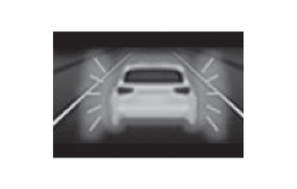 |
Warning operation after preceding vehicle deceleration assistance has ended. |
(b) Deceleration Assist Performed when Detecting a Pedestrian/Bicycle Crossing the Road
(1) When an object is detected, the steering wheel and brake pedal are operated to ensure enough distance between the object.
HINT:
This assist is performed when lane markers are detected.
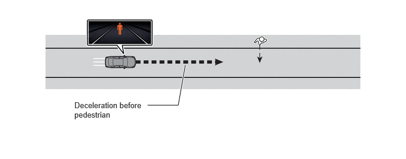(c) Steering/Deceleration Assist Performed when Detecting Pedestrian/Bicycle on the Side of the Road
(1) When an object is detected, the vehicle is gently decelerated or taken lateral offset slightly to ensure enough distance between the object.
HINT:
This assist is performed when lane markers are detected.
Approaching Pedestrian on One Side
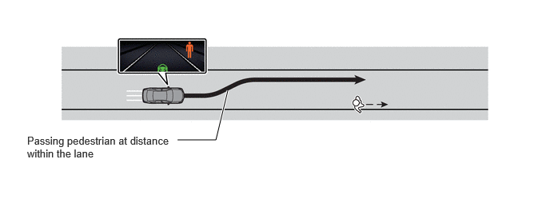Approaching Pedestrians on Both Sides
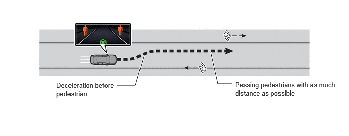Approaching Pedestrian on One Side and Oncoming Vehicle on the Other
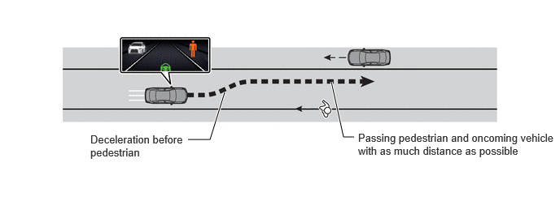Steering Assist to Ensure Enough Distance between the Vehicle Parked on the Roadside
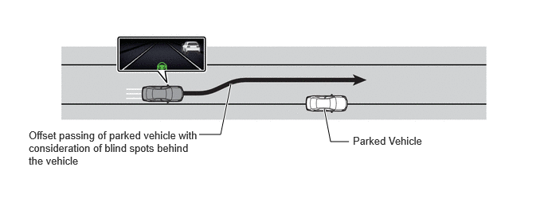(d) Deceleration Assist in Response to Preceding Vehicles
(1) If an interruption of a preceding/adjacent vehicle is detected, the vehicle is gently decelerated when the accelerator pedal is released so that the vehicle-to-vehicle distance does not become excessively short.
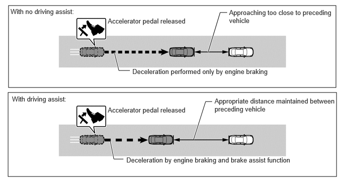(e) Deceleration Assist in Response to Curves
(1) When it is judged that the vehicle speed is excessive for the approaching curve, the vehicle is gently decelerated when the accelerator pedal is released.
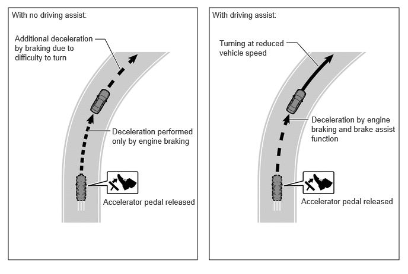(f) Steering assist in accordance with course
(1) When driving in a straight line, the reaction force is increased without impairing ease of movement, providing a sense of security as if the steering wheel is being supported from the left and right sides.
(2) At the entrance of a curve, the steering becomes lighter at the time of operation, allowing smooth operation as if being pulled into the curve.
(3) During the curve, the steering wheel stops as if being supported by hands, providing a sense of secure smooth driving.
(4) At the exit of the curve, the steering wheel returns without delay as if being pushed back, facilitating smooth and comfortable driving.
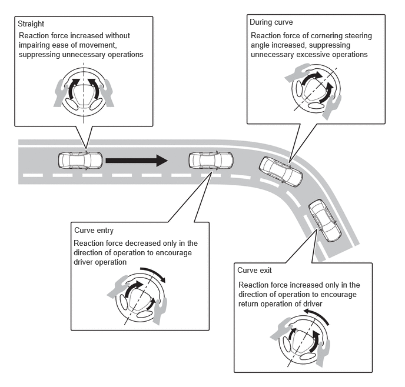FUNCTION
(a) Proactive driving assist supports brake/steering wheel operations when an object is detected to ensure enough distance between the object.
(b) Settings of proactive driving assist can be changed using the customize settings.